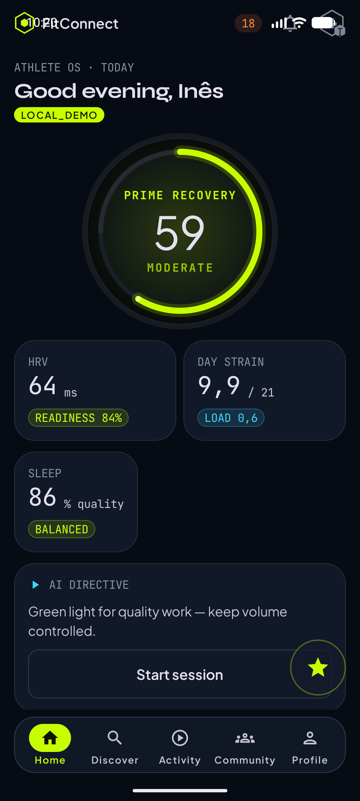
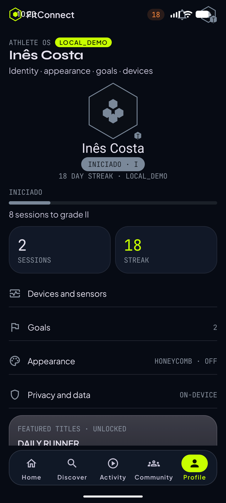
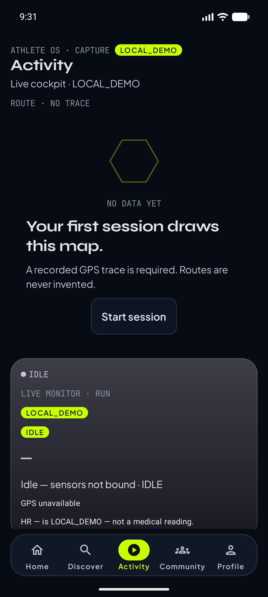
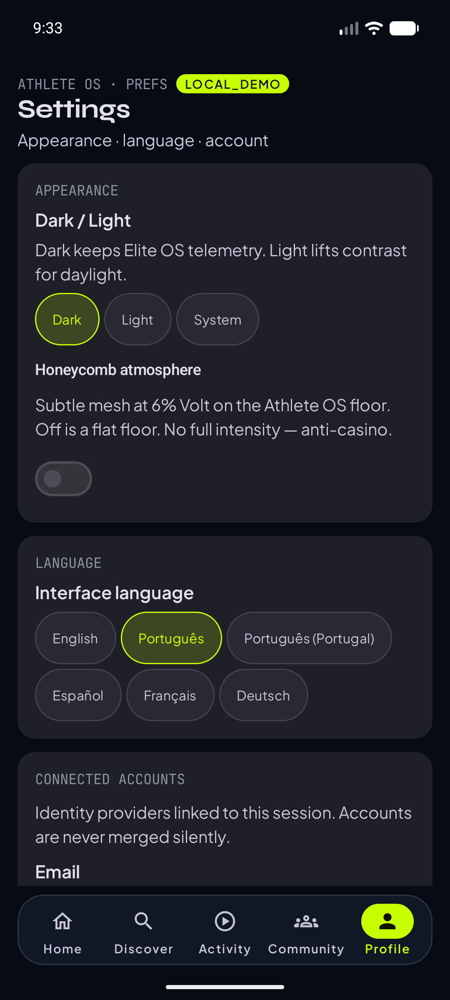

01
Cockpit Home
Readiness, streak e feed no telemóvel Compose. Captura real: Home com patente INICIADO, não ELITE. Dados de telemetria ainda podem ser LOCAL_DEMO; o rótulo não é escondido na app.
MAQUETE · LOCAL_DEMO · não é a landing de produção · capturas emulator-5554 · 2026-08-17
ELITE OS · ATHLETE
FitConnect liga o telemóvel Android, o relógio Wear OS e a web à mesma sessão. Começas no pulso; o ecrã grande não inventa um segundo treino.
APK debug: não publicado nesta sessão (emulador ⏭️). QR e assembleRelease: FASE 7.



O QUE EXISTE HOJE
01
Readiness, streak e feed no telemóvel Compose. Captura real: Home com patente INICIADO, não ELITE. Dados de telemetria ainda podem ser LOCAL_DEMO; o rótulo não é escondido na app.
02
Activity com máquina de estados e mapa Canvas (não Google Maps neste ciclo). O ramo de loading infinito no detalhe de corrida continua um risco conhecido; a correcção pedida é Loading com timeout 8s → Error / Success / Empty.
03
Hexatar 104dp, patente INICIADO I, progressão “8 sessions to grade II”, achievements ASCEND reais (5 desbloqueadas + 3 Locked na captura). Definições ainda aparecem no perfil: a FASE 2B (abas + ecrã Settings) não está fechada.
04
Módulo android/wear e Data Layer compilam. Não há captura de emulador Wear nesta máquina
(hypervisor). Complicações, tile e modo ambiente a preto e branco ainda não existem. Por isso o relógio
não entra como “screenshot de produto”.
05
Next.js já serve landing e /dashboard. Os painéis de 12 semanas / 1RM / CSV desta maquete
ainda não são a app de produção. Abrir
dashboards.html.
TRÊS SUPERFÍCIES
PHONE · REFERÊNCIA
HOME · DISCOVER · ACTIVITY · COMMUNITY · PROFILE. Tokens gerados de packages/design-tokens.

WATCH · COMPANION
Data Layer, não internet. Um dado por ecrã. Captura: ⏭️.
código existe · AVD wear não corrido nesta sessão
WEB · DENSIDADE
Produção: fitconnect-phi.vercel.app. Sidebar, atalhos, CSV: ver maquete, não o dashboard actual.
FAQ
Não como produto. Tipos e outbox existem em :shared. O bloqueio de sessão exclusiva está no
ADR-002, não no código. Testes 1–10 da FASE 5B: ⏭️.
Não. Play Console continua bloqueado. APK debug local só com Gradle + emulador/dispositivo.
Só se o backend e os sensores estiverem ligados. Em debug a app marca LOCAL_DEMO. Esta maquete não finge milhares de atletas.
Não. A secção não existe até haver provas reais (MEGA PROMPT §8 e §16.8).